Speex is based on CELP, which stands for Code Excited Linear Prediction. This section attempts to introduce the principles behind CELP, so if you are already familiar with CELP, you can safely skip to section 3. The CELP technique is based on three ideas:
The linear prediction model represents each speech sample as linear combination of past samples, plus an error signal called the excitation (or residual).
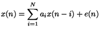
In the z-domain, this can be expressed as
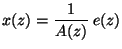
where  is defined as
is defined as
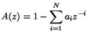
We usually refer to  as the analysis filter and
as the analysis filter and
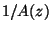
as the synthesis filter.
The  filter is computed using the Levinson-Durbin algorithm,
which starts from the auto-correlation
filter is computed using the Levinson-Durbin algorithm,
which starts from the auto-correlation
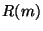
of the signal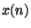
.
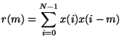
For an order  filter, we have:
filter, we have:
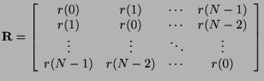
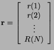
The filter coefficients
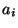
are found by solving the system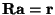
. What the Levinson-Durbin algorithm does here is making the solution to the problem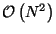
instead of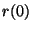
by a number slightly above one (such as 1.0001), which is equivalent to adding noise to the signal. Also, we can apply a window the the auto-correlation, which is equivalent to filtering in the frequency domain, reducing sharp resonances.Because LPC coefficients have very little robustness to quantization, they are converted to Line Spectral Pair (LSP) coefficients which have a much better behaviour with quantization, one of them being that it's easy to keep the filter stable.
During voiced segments, the speech signal is very periodic, so it is possible to take advantage of that by expressing the excitation signal
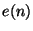
as
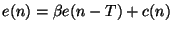
where  is the pitch period,
is the pitch period,  is the pitch gain and
is the pitch gain and
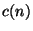
is taken from the innovation codebook. In the z-domain, the excitation can be expressed as:
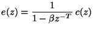
This is where most of the bits in a CELP codec are allocated. It represents the information that couldn't be obtained either from linear prediction or pitch prediction.
Most (if not all) modern audio codecs attempt to shape the noise so that it is the hardest to detect with the ear. That means that more noise can be tolerated in parts of the spectrum that are louder and vice versa. That's why the error is minimized for the perceptually weighted signal
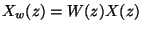
with control parameters
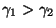
. If the noise is white in the perceptually weighted domain, then in the signal domain its spectral shape will be of the form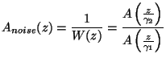
If a filter  has (complex) poles at
has (complex) poles at
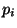
in the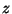
-plane, the filter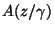
filter will have its poles at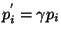
, making it a flatter version of